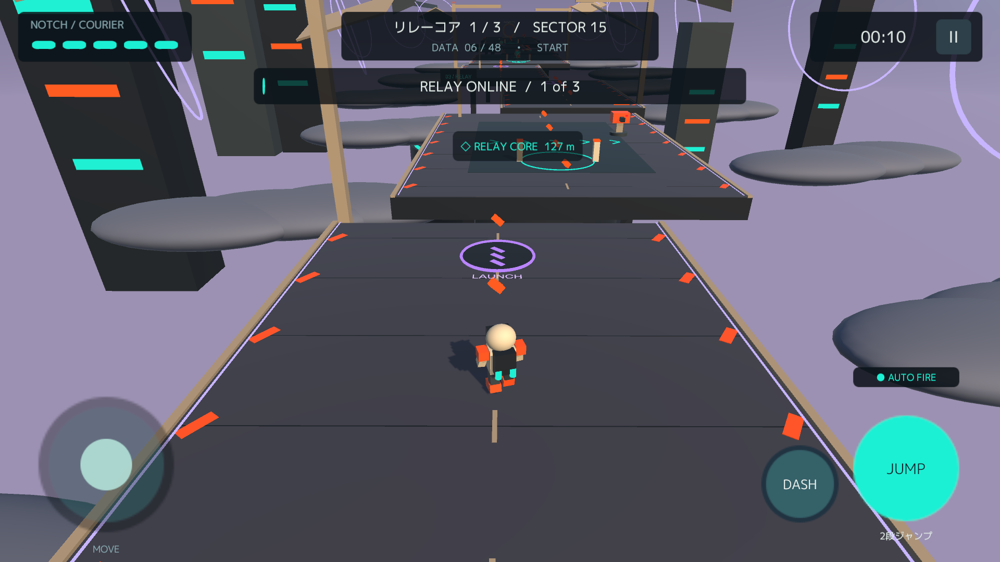
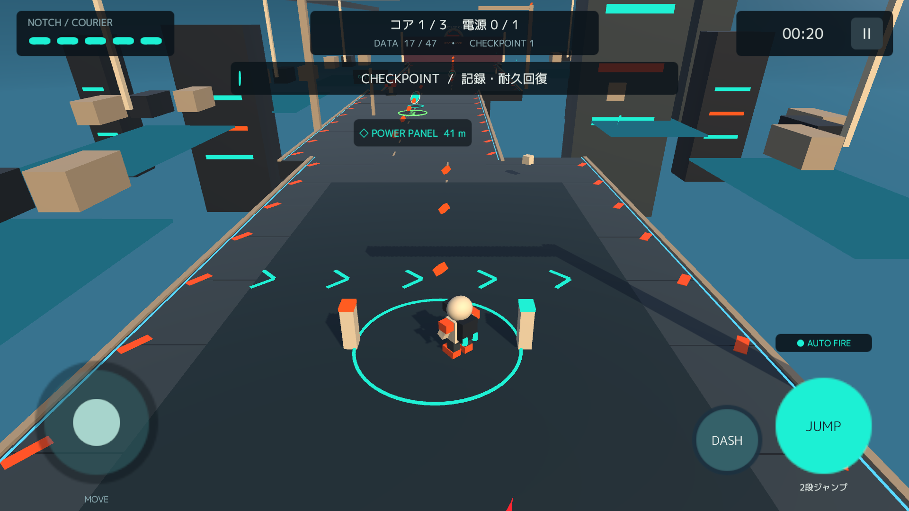
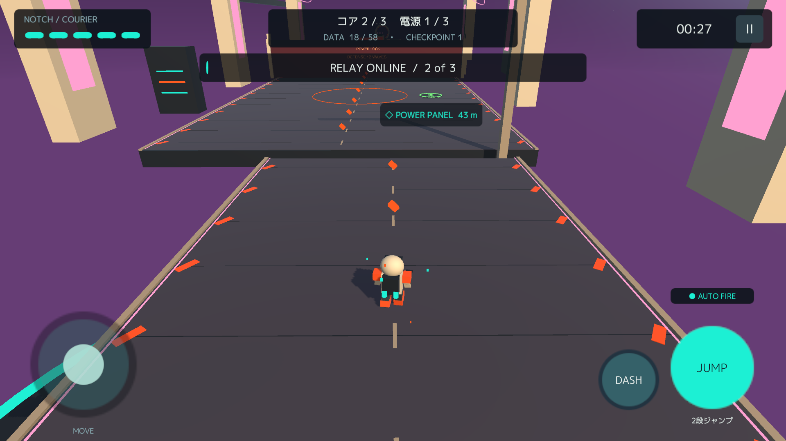

01 / MOVE
空へ、もう一歩。
二段ジャンプとダッシュで足場をつなぐ。上昇パネルで高く跳んだあとも、さらに空中ジャンプができます。
JUMP / DASH / LAUNCH光をつなぐ、3Dアクション。
ルミノッチ
届かなかった光を、
もう一度。
小さな配達ロボットと一緒に、
灯りの消えた世界を駆け抜けよう。

15A SMALL LIGHT IN A QUIET WORLD
長い休眠から目覚めた配達ロボット、ノッチ。
案内AIのモカとともに、止まった中継点をつなぎ直し、
届かなかった荷物の行き先を探します。
道中の通信や、各面の前後に描かれる会話。
一つずつ灯りをともすたび、世界の記憶が動き出します。
NOTCH & MOCHA
COURIER / NAVIGATION AI
02 / THE JOURNEY
20の航路には、それぞれ違う表情があります。
操作を覚えながら、自分のペースで進めます。
二段ジャンプとダッシュで足場をつなぐ。上昇パネルで高く跳んだあとも、さらに空中ジャンプができます。
JUMP / DASH / LAUNCH
流れる搬送路、電源パネル、予告のある放電床。進む道を見つけ、仕掛けに合わせて突破しましょう。
CONVEYOR / POWER / PULSE
コアを集め、防衛区画を越え、次の中継点へ。DATAを集めたり、星の条件に挑戦したりする楽しみも。
CORE / DATA / CHALLENGE03 / YOUR OWN PACE
急がなくても大丈夫。記録地点での回復と保存で、続きから冒険できます。
移動、ジャンプ、ダッシュに集中。敵への射撃は自動です。
記録地点で回復・自動保存。リトライに回数制限はありません。
星で解放できる外観と、任意の買い切り外観パックを用意しています。見た目による能力差はありません。